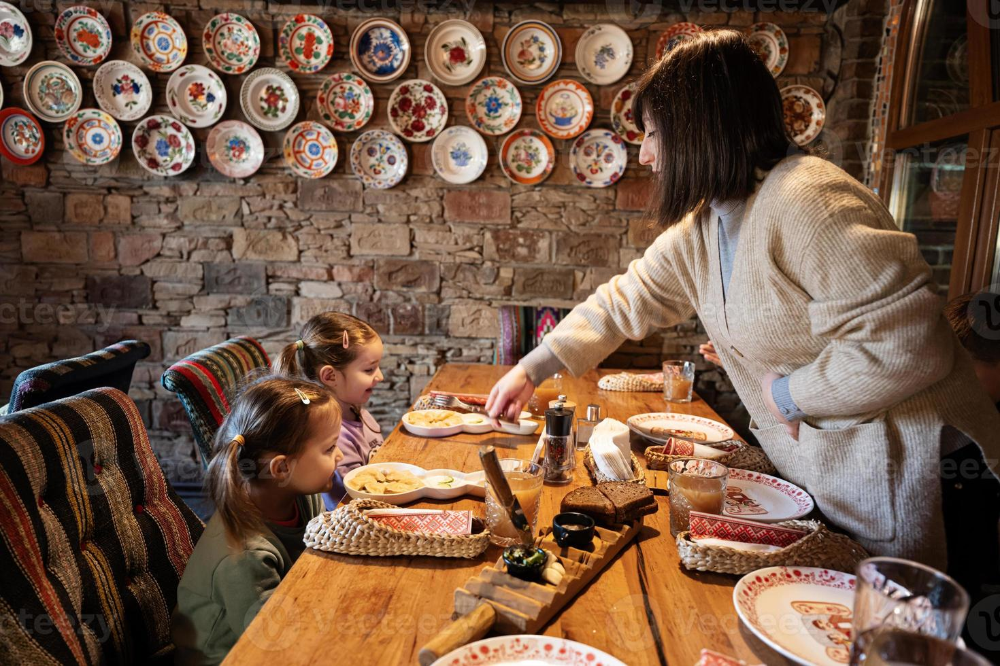
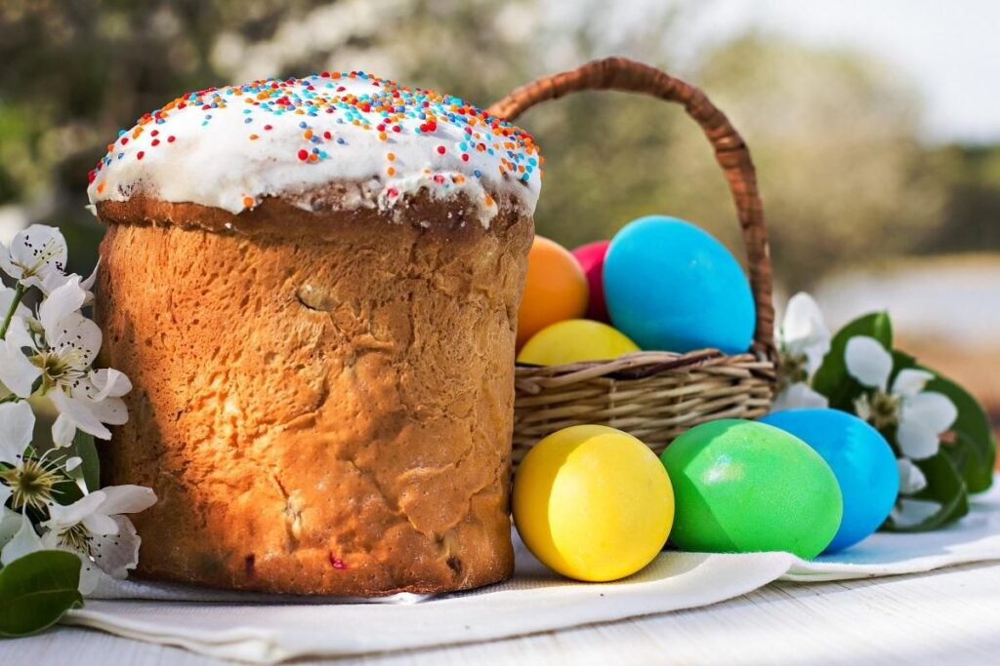
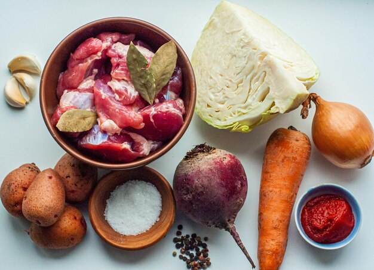

Ukrainian Food and Culture
Ukrainian cuisine is deeply connected to family, tradition, and celebration. Meals bring people together and reflect the country’s rich history and values.
Family and Hospitality
In Ukrainian culture, food is a way of showing love and hospitality. Families gather around the table to share meals, especially during weekends and special occasions.
Guests are always welcomed with plenty of food, and it is common to offer homemade dishes as a sign of respect and kindness.

Holiday Foods
Many Ukrainian dishes are tied to holidays and traditions. For example, borscht is enjoyed year-round, while dishes like kutia are served during Christmas celebrations.
Easter is another important holiday, featuring special foods like paska (sweet bread) and decorated eggs called pysanky.

Traditional Ingredients
Ukrainian cooking uses simple and natural ingredients. Common foods include potatoes, cabbage, beets, grains, and fresh herbs like dill.
Sour cream is often added to dishes for extra flavor, and many meals are hearty and filling due to the country’s agricultural history.

Learn More About Ukrainian Culture
Want to explore more about Ukrainian traditions, food, and history? Visit this site: